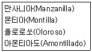
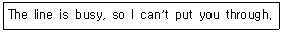
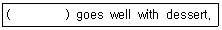
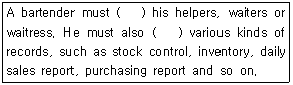

조주기능사 (2016-07-10 기출문제)
1과목: 주류학개론
1. 레드와인용 포도 품종이 아닌 것은?
- 리슬링(Riesling)
- 메를로(Merlot)
- 삐노누아(Pinot Noir)
- 카베르네 소비뇽(Cabernet Sauvignon)
(정답률: 67%)

2. 과일이나 곡류를 발효시켜 증류한 스피릿츠(Spirits)에 감미와 천연 추출물 등을 첨가한 것은?
- 양조주(Fermented Liquor)
- 증류주(Distilled Liquor)
- 혼성주(Liqueur)
- 아쿠아비트(Aquavit)
(정답률: 72%)
3. 이탈리아 와인에 대한 설명으로 틀린 것은?
- 거의 전 지역에서 와인이 생산된다.
- 지명도가 높은 와인산지로는 피에몬테, 토스카나, 베네토 등이 있다.
- 이탈리아 와인 등급체계는 5등급이다.
- 네비올로, 산지오베제, 바르베라, 돌체토 포도 품종은 레드와인용으로 사용된다.
(정답률: 57%)
4. 다음 보기들과 가장 관련되는 것은?

- 이탈리아산 포도주
- 스페인산 백포도주
- 프랑스산 샴페인
- 독일산 포도주
(정답률: 60%)
5. 맥주의 제조과정 중 발효가 끝난 후 숙성시킬 때의 온도로 가장 적합한 것은?
- -1∼3℃
- 8∼10℃
- 12∼14℃
- 16∼20℃
(정답률: 49%)
6. 밀(Wheat)을 주원료로 만든 맥주는?
- 산미구엘(San Miguel)
- 호가든(Hoegaarden)
- 람빅(Lambic)
- 포스터스(Foster's)
(정답률: 76%)
7. 리큐르(Liqueur)의 여왕이라고 불리며 프랑스의 수도원의 이름을 가지고 있는 것은?
- 드람부이(Drambuie)
- 샤르트뢰즈(Chartreuse)
- 베네딕틴(Benedictine)
- 체리브랜디(Cherry Brandy)
(정답률: 65%)
8. 맥주 제조 시 호프(Hop)를 사용하는 가장 주된 이유는?
- 잡냄새 제거
- 단백질 등 질소화합물 제거
- 맥주색깔의 강화
- 맥즙의 살균
(정답률: 59%)
9. 다음 중 호크 와인(Hock Wine)이란?
- 독일 라인산 화이트 와인
- 프랑스 버건디산 화이트 와인
- 스페인 호크하임엘산 레드 와인
- 이탈리아 피에몬테산 레드 와인
(정답률: 55%)
10. 다음 중 Bitter가 아닌 것은?
- Angostura
- Campari
- Galliano
- Amer Picon
(정답률: 50%)
11. 발포성 와인의 이름이 잘못 연결된 것은?
- 스페인 – 카바(Cava)
- 독일 – 젝트(Sekt)
- 이탈리아 – 스푸만테(Spumante)
- 포르투갈 – 도세(Doce)
(정답률: 57%)
12. 식후 주(After Dinner Drink)로 가장 적합한 것은?
- 코냑(Cognac)
- 드라이 셰리 와인(Dry Sherry Wine)
- 드라이 진(Dry Gin)
- 베르무트(Vermouth)
(정답률: 52%)
13. 리큐르 중 D.O.M. 글자가 표기되어 있는 것은?
- Sloe Gin
- Kahlua
- Kummel
- Benedictine
(정답률: 69%)
14. 슬로우 진(Sloe Gin)의 설명 중 옳은 것은?
- 증류주의 일종이며, 진(Gin)의 종류이다.
- 보드카(Vodka)에 그레나딘 시럽을 첨가한 것이다.
- 아주 천천히 분위기 있게 먹는 칵테일이다.
- 진(Gin)에 야생자두(Sloe Berry)의 성분을 첨가한 것이다.
(정답률: 63%)
15. 콘 위스키(Corn Whiskey)란?
- 원료의 50% 이상 옥수수를 사용한 것
- 원료에 옥수수 50%, 호밀 50%가 섞인 것
- 원료의 80% 이상 옥수수를 사용한 것
- 원료의 40% 이상 옥수수를 사용한 것
(정답률: 68%)
16. 일반적으로 단식 증류기(Pot Still)로 증류하는 것은?
- Kentucky Straight Bourbon Whiskey
- Grain Whisky
- Dark Rum
- Aquavit
(정답률: 44%)
17. 알코올성 음료를 의미하는 용어가 아닌 것은?
- Hard Drink
- Liquor
- Ginger Ale
- Spirits
(정답률: 66%)
18. 비알코올성 음료의 분류방법에 해당되지 않는 것은?
- 청량음료
- 영양음료
- 발포성음료
- 기호음료
(정답률: 69%)
19. 다음 중 럼에 대한 설명이 아닌 것은?
- 럼의 주재료는 사탕수수이다.
- 럼은 서인도제도를 통치하는 유럽의 식민정책 중 삼각무역에 사용되었다.
- 럼은 사탕을 첨가하여 만든 리큐르이다.
- 럼의 향, 맛에 따라 라이트 럼, 미디엄 럼, 헤비 럼으로 분류된다.
(정답률: 76%)
20. 탄산음료 중 뒷맛이 쌉쌀한 맛이 남는 음료는?
- 칼린스 믹서
- 토닉 워터
- 진저엘
- 콜라
(정답률: 56%)
21. 다음 중 생산지가 옳게 연결된 것은?
- 비시수 – 오스트리아
- 셀처수 - 독일
- 에비앙수 – 그리스
- 페리에수 – 이탈리아
(정답률: 48%)
22. 우리나라 전통주에 대한 설명으로 틀린 것은?
- 증류주 제조기술은 고려시대 때 몽고에 의해 전래되었다.
- 탁주는 쌀 등 곡식을 주로 이용하였다.
- 탁주, 약주, 소주의 순서로 개발되었다.
- 청주는 쌀의 향을 얻기 위해 현미를 주로 사용한다.
(정답률: 64%)
23. 보드카의 설명으로 옳지 않은 것은?
- 슬라브 민족의 국민주로 애음되고 있다.
- 보드카는 러시아에서만 생산된다.
- 보드카의 원료는 주로 보리, 밀, 호밀, 옥수수, 감자 등이 사용된다.
- 보드카에 향을 입힌 보드카를 플레이버 보드카라 칭한다.
(정답률: 79%)
24. Whisky의 재료가 아닌 것은?
- 맥아
- 보리
- 호밀
- 감자
(정답률: 69%)
25. 에스프레소의 커피추출이 빨리 되는 원인이 아닌 것은?
- 너무 굵은 분쇄입자
- 약한 탬핑 강도
- 너무 많은 커피 사용
- 높은 펌프 압력
(정답률: 64%)
26. 브랜디에 대한 설명으로 가장 거리가 먼 것은?
- 포도 또는 과실을 발효하여 증류한 술이다.
- 코냑 브랜디에 처음으로 별표의 기호를 도입한 것은 1865년 헤네시(Hennessy)사에 의해서이다.
- Brandy는 저장기간을 부호로 표시하며 그 부호가 나타내는 저장기간은 법적으로 정해져 있다.
- 브랜디의 증류는 와인을 2∼3회 단식 증류기(Pot Still)로 증류한다.
(정답률: 54%)
27. 위스키의 원료에 따른 분류가 아닌 것은?
- 몰트 위스키
- 그레인 위스키
- 포트스틸 위스키
- 블렌디드 위스키
(정답률: 61%)
28. 국가지정 중요무형문화재로 지정받은 전통주가 아닌 것은?
- 충남 면천두견주
- 진도 홍주
- 서울 문배주
- 경주 교동법주
(정답률: 49%)
29. 커피로스팅의 정도에 따라 약한 순서에서 강한 순서대로 나열한 것으로 옳은 것은?
- American Roasting→German Roasting→French Roasting→Italian Roasting
- German Roasting→Italian Roasting→American Roasting→French Roasting
- Italian Roasting→German Roasting→American Roasting→French Roasting
- French Roasting→American Roasting→Italian Roasting→German Roasting
(정답률: 59%)
30. 혼합물을 구성하는 각 물질의 비등점의 차이를 이용하여 만드는 술을 무엇이라 하는가?
- 발효주
- 발아주
- 증류주
- 양조주
(정답률: 54%)
2과목: 주장관리개론
31. 구매부서의 기능이 아닌 것은?
- 검수
- 저장
- 불출
- 판매
(정답률: 69%)
32. Pousse Cafe를 만드는 재료 중 가장 나중에 따르는 것은?
- Brandy
- Grenadine
- Creme de Menthe(White)
- Creme de Cassis
(정답률: 45%)
33. Manhattan 조주 시 사용하는 기물은?
- 셰이커(Shaker)
- 믹싱 글라스(Mixing Glass)
- 전기 블렌더(Blender)
- 주스 믹서(Juice Mixer)
(정답률: 59%)
34. 바텐더의 칵테일용 가니쉬 재료 손질에 관한 설명 중 가장 거리가 먼 것은?
- 레몬 슬라이스는 미리 손질하여 밀폐용기에 넣어서 준비한다.
- 오렌지 슬라이스는 미리 손질하여 밀폐용기에 넣어서 준비한다.
- 레몬 껍질은 미리 손질하여 밀폐용기에 넣어서 준비한다.
- 딸기는 미리 꼭지를 제거한 후 깨끗하게 세척하여 밀폐용기에 넣어서 준비한다.
(정답률: 53%)
35. Gin &Tonic에 알맞은 Glass와 장식은?
- Collins Glass – Pineapple Slice
- Cocktail Glass - Olive
- Cordial Glass – Orange Slice
- Highball Glass – Lemon Slice
(정답률: 63%)
36. Classic Bar의 특징과 가장 거리가 먼 것은?
- 서비스의 중점을 정중함과 편안함에 둔다.
- 소규모 라이브 음악을 제공한다.
- 고객에게 화려한 바텐딩 기술을 선보인다.
- 칵테일 조주 시 정확한 용량과 방법으로 제공한다.
(정답률: 71%)
37. 위스키가 기주로 쓰이지 않는 칵테일은?
- 뉴욕(New York)
- 로브 로이(Rob Roy)
- 블랙 러시안(Black Russian)
- 맨하탄(Manhattan)
(정답률: 62%)
38. 셰이킹(Shaking) 기법에 대한 설명으로 틀린 것은?
- 셰이커에 얼음을 충분히 넣어 빠른 시간 안에 잘 섞이고 차게 한다.
- 셰이커에 재료를 순서대로 Cap을 Strainer에 씌운 다음 Body에 덮는다.
- 잘 섞이지 않는 재료들을 셰이커에 넣어 세차게 흔들어 섞는 조주기법이다.
- 계란, 우유, 크림, 당분이 많은 리큐르 등으로 칵테일을 만들 때 많이 사용된다.
(정답률: 68%)
39. 주장의 종류로 가장 거리가 먼 것은?
- Cocktail Bar
- Members Club Bar
- Snack Bar
- Pub Bar
(정답률: 69%)
40. 다음 중 달걀이 들어가는 칵테일은?
- Millionaire
- Black Russian
- Brandy Alexander
- Daiquiri
(정답률: 54%)
41. 다음 중 휘젓기(Stirring) 기법으로 만드는 칵테일이 아닌 것은?
- Manhattan
- Martini
- Gibson
- Gimlet
(정답률: 42%)
42. 다음 칵테일 중 Floating 기법으로 만들지 않는 것은?
- B&B
- Pousse Cafe
- B-52
- Black Russian
(정답률: 61%)
43. 와인에 대한 Corkage의 설명으로 가장 거리가 먼 것은?
- 업장의 와인이 아닌 개인이 따로 가져온 와인을 마시고자 할 때 적용된다.
- 와인을 마시기 위해 이용되는 글라스, 직원 서비스 등에 대한 요금이 포함된다.
- 주로 업소가 보유하고 있지 않은 와인을 시음할 때 많이 작용된다.
- 코르크로 밀봉되어 있는 와인을 서비스하는 경우에 적용되며, 스크류캡을 사용한 와인은 부과되지 않는다.
(정답률: 63%)
44. 주장(Bar)에서 기물의 취급방법으로 적합하지 않은 것은?
- 금이 간 접시나 글라스는 규정에 따라 폐기한다.
- 은기물은 은기물 전용 세척액에 오래 담가두어야 한다.
- 크리스탈 글라스는 가능한 손으로 세척한다.
- 식기는 같은 종류별로 보관하며 너무 많이 쌓아두지 않는다.
(정답률: 74%)
45. 다음 중 소믈리에(Sommelier)의 주요 임무는?
- 기물세척(Utensil Cleaning)
- 주류저장(Store Keeper)
- 와인판매(Wine Steward)
- 칵테일조주(Cocktail Mixing)
(정답률: 67%)
46. 바의 매출액 구성요소 산정방법 중 옳은 것은?
- 매출액 = 고객수 ÷ 객단가
- 고객수 = 고정고객 × 일반고객
- 객단가 = 매출액 ÷ 고객수
- 판매가 = 기준단가 × (재료비/100)
(정답률: 54%)
47. 바(Bar) 기물이 아닌 것은?
- Bar Spoon
- Shaker
- Chaser
- Jigger
(정답률: 77%)
48. 글라스 세척 시 알맞은 세제와 세척순서로 짝지어진 것은?
- 산성세제, 더운물 - 찬물
- 중성세제, 찬물 - 더운물
- 산성세제, 찬물 - 더운물
- 중성세제, 더운물 – 찬물
(정답률: 68%)
49. Rum 베이스 칵테일이 아닌 것은?
- Daiquiri
- Cuba Libre
- Mai Tai
- Stinger
(정답률: 45%)
50. 다음 중 보드카(Vodka)를 주재료로 사용하지 않는 칵테일은?
- Cosmopolitan
- Kiss of Fire
- Apple Martini
- Margarita
(정답률: 42%)
3과목: 고객서비스영어
51. “5월 5일에는 이미 예약이 다 되어 있습니다.”의 표현은?
- We look forwadr to seeing you on May 5th.
- We are fully booked on May 5th.
- We are available on May 5th.
- I will check availability on May 5th.
(정답률: 74%)
52. 다음 문장 중 틀린 것은?
- Are you in a hurry?
- May I help With you your baggage
- Will you pay in cash or with a credit card?
- What is the most famous in Seoul?
(정답률: 55%)
53. 아래 문장의 의미는?

- 통화 중이므로 바꿔 드릴 수 없습니다.
- 고장이므로 바꿔 드릴 수 없습니다.
- 외출 중이므로 바꿔 드릴 수 없습니다.
- 아무도 없으므로 바꿔 드릴 수 없습니다.
(정답률: 72%)
54. Which one is the spirit made from agave?
- Tequila
- Rum
- Vodka
- Gin
(정답률: 63%)
55. “a glossary of basic wine terms”의 연결로 틀린 것은?
- Balance : the portion of the wine's odor derived from the grape variety and fermentation.
- Nose : the total odor of wine composed of aroma, bouquet, and other factors.
- Body : the weight or fullness of wine on palate.
- Dry : a tasting term to denote the absence of sweetness in wine.
(정답률: 39%)
56. 다음 ( )에 들어갈 단어로 가장 적합한 것은?

- Ice Wine
- Red Wine
- Vermouth
- Dry Sherry
(정답률: 48%)
57. Which is not an appropriate instrument for stirring method of how to make cocktail?
- Mixing Glass
- Bar Spoon
- Shaker
- Strainer
(정답률: 44%)
58. 다음 중 의미가 다른 하나는?
- It's my treat this time.
- I'll pick up the tab.
- Let's go Dutch.
- It's on me.
(정답률: 66%)
59. 다음 괄호 안에 가장 적합한 것은?

- take, manage
- supervise, handle
- respect, deal
- manage, careful
(정답률: 49%)
60. Dry Gin, Egg White, and Grenadine are the main ingredients of (괄호).
- Bloody Mary
- Eggnog
- Tom and Jerry
- Pink Lady
(정답률: 43%)